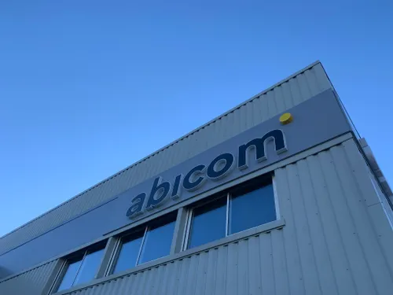

Stage 1ère Année — Abicom
ESN — 10 Allée Pierre de Fermat, 63170 Aubière — 18 mai au 19 juin 2026
Informations
- Entreprise : Abicom
- Type : ESN
- Adresse : 10 Allée Pierre de Fermat, 63170 Aubière
- Période : 18 mai — 19 juin 2026
- Rôle : Technicien Support Utilisateur

Mon stage chez Abicom
Abicom est une ESN (Entreprise de Services du Numérique) dans laquelle j'ai eu la chance d'effectuer mon stage de 1ère année dans le cursus de BTS SIO. Son cœur d'activité est divisé en plusieurs secteurs distincts :
- Le support utilisateur
- La réparation et suivi d'outils informatiques
- La cybersécurité
Lors de mon intégration en tant que stagiaire, j'ai pu voir une très bonne partie de ce qu'était le support aux utilisateurs et les différents outils avec lesquels j'ai pu appliquer des concepts vus dans mon BTS. Malgré le fait que le support utilisateurs ait été la principale tâche, les missions étaient très variées, ce qui m'a apporté beaucoup de connaissances sur les différents outils et leurs principes, mais aussi une vision tout autre du milieu du travail en conditions réelles.
Mes principales missions
Campagne de migration ISL
L'accès à distance sur les équipements clients est crucial chez Abicom. Cette campagne visait à changer d'outil et à installer la nouvelle solution sur un nombre conséquent d'équipements via un fichier ZIP déployant un script PowerShell, suivi du renseignement du nom de machine et mot de passe d'accès.
Résolution de tickets utilisateurs
Traitement des demandes clients sous forme de tickets : analyse du problème, appel du client, résolution et clôture du ticket.
Création de tickets utilisateurs
Lors d'appels entrants, création du ticket associé en renseignant les informations du client. Deux cas : résolution immédiate avec clôture, ou création d'un ticket non résolu pour recontact ultérieur.
Administration dans l'Active Directory
Via prise à distance, modification de paramètres utilisateurs : création/modification de comptes, gestion de groupes, attribution de droits.
Configuration OneDrive
Ajout de personnes à des groupes OneDrive pour permettre à certains pôles de travailler de manière segmentée sur des dossiers et fichiers partagés.
Gestion de tenant M365
Administration du tenant Microsoft 365 : création de profils utilisateurs, attribution de licences Microsoft, gestion des droits spécifiques.
Restauration VEEAM Backup
Utilisation de VEEAM pour accéder à distance aux données d'un serveur et restaurer des fichiers supprimés par erreur à partir de sauvegardes antérieures.
Gestion d'imprimantes
Gestion et installation d'imprimantes via OneDrive (onglet Imprimantes Connectées), mises à jour manuelles ou via drivers automatiques.
Mon avis personnel
Avant tout je tiens à remercier Abicom de m'avoir accueilli et toute son équipe de m'avoir inculqué tant de connaissances que j'ignorais. L'équipe était très gentille et compréhensive à l'égard d'un stagiaire. Malgré l'apparence de tâches répétitives, j'ai adoré ce stage et d'un point de vue professionnel les tâches étaient variées et enrichissantes. J'ai beaucoup aimé discuter et aider les personnes dans le besoin et les remercie de m'avoir montré ces outils et cette face de l'informatique.